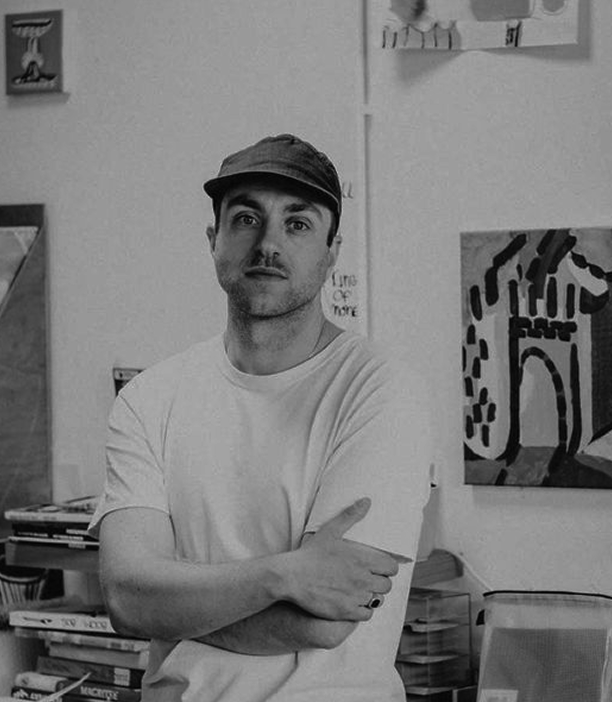
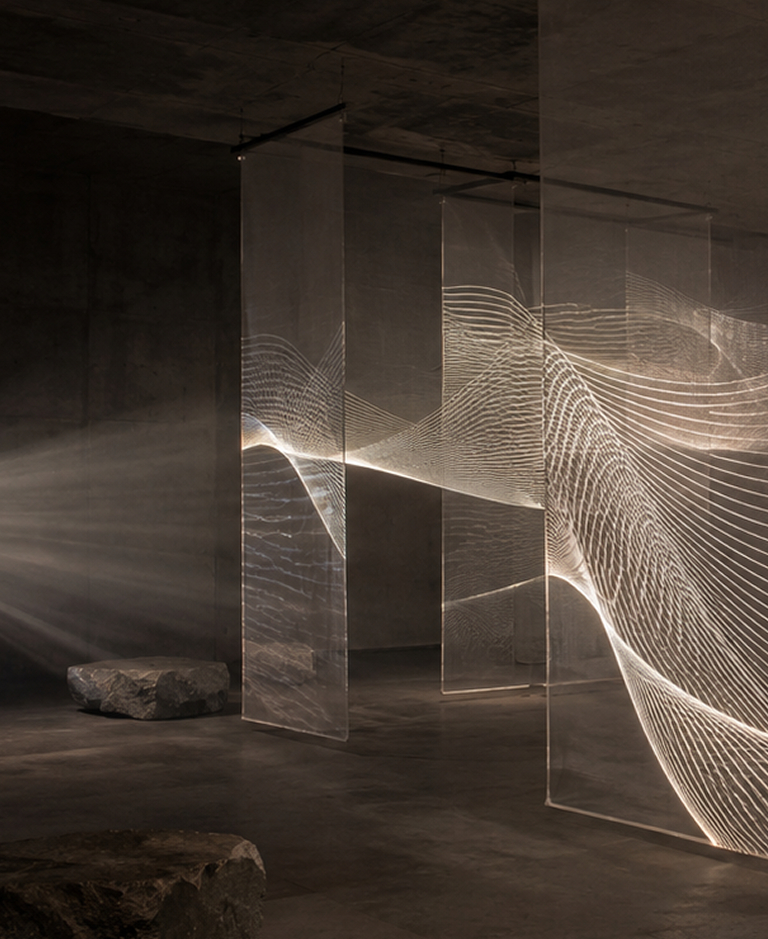
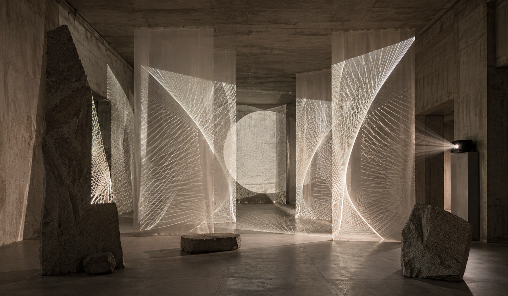

Художник, работающий на пересечении архитектуры, цифровых медиа и световой среды.
Создаёт инсталляции с использованием проекций, генеративной графики и полупрозрачных материалов. Исследует, как свет и изображение способны изменить восприятие физического пространства, превращая архитектурные объёмы в подвижную визуальную среду.
Порог видимого (2026 г.)
Инсталляция исследует, как свет может менять архитектуру пространства и превращать его в подвижную визуальную среду. Полупрозрачные экраны становятся поверхностями для проекций: графические линии проходят сквозь них, накладываются друг на друга и создают ощущение объёма, который существует между материальным и цифровым.


Архитектура проекции (2023 г.)

Инсталляция исследует границу между физическим пространством и цифровым изображением. Проекции с генеративной графикой ложатся на бетонные плоскости, камень и архитектуру зала, превращая статичную среду в подвижный визуальный ландшафт.